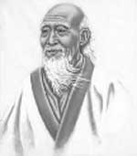

Taoizmin efsanevi kurucusu Lao Tzu’nun gerçekten yaşayıp yaşamadığı tarihçiler arasında devam eden bir tartışma konusudur. Efsaneye göre büyük bilge, MÖ 6. yy’da Çin’de yaşadı. İnsan doğası, ahlak ve hür irade hakkında bir eser olan Tao Te Ching’i yazdı. Bu kitaptaki düşünceler, Asya’nın en önemli dini inançlarından birinin temellerini atmıştır.

Aslına bakılırsa Lao Tzu’nun hayatı hakkında hiçbir şey bilinmemektedir. Hayatı ile ilgili boşluk sayısız efsane ile doldurulmuştur. Bunlardan birine göre bilgeliğinin bir işareti olarak sakallı doğmuştur. Bir başka mit 996 yıl yaşadığını iddia eder. Kimileri günümüzün Luoyang şehrinde Çin imparatorunun arşivcisi olarak çalıştığına işaret ederler. Söylendiğine göre ilk felsefi yazılarını burada yazmıştır.
Bir efsaneye göre bir gecede yazılmış olan Tao Te Ching, seksen bir bölümden oluşur. Ahlak ve felsefeyle ilgili bilgilerin yer aldığı kitap, evrenin doğasını (Tao yol anlamına gelir) ve kişisel ahlakın önemini (Te erdem anlamına gelir) açıklamaya çalışır. Lao Tzu’nun ahlak anlayışında derin düşüncenin önemine, barışçılığa ve doğayı kabullenmeye vurgu yapılır. “Kendinle barış, hayatın doğal akışı ile neşelen” der bir pasajında. “Hiçbir beklentin olmadığı zaman, bütün dünya senin olur.”
Taoizmin en bilinen konsepti ikiciliktir. Lao Tzu’ya göre doğa zıtlıklarla doludur: dişil ve eril, aydınlık ve karanlık, yaşam ve ölüm. Lao Tzu bu ikilikler arasındaki gizli bağlantıları anlayarak evrenin doğasının kavranabileceğini ileri sürer. Gerçekten de pek çok açıdan bu zıtlardan biri olmadan diğerinin de var olması mümkün değildir. Bu konsept en çok ünlü Yin (dünya) ve Yang (cennet) kavramları ile sembolize edilmiştir. Bunlar zıt kavramlar gibi gözükse de biri olmadan diğerinin varlığı söz konusu olamaz.
Lao Tzu’nun münzevi bir keşiş olarak yaşadığı ve sessiz sedasız bir biçimde öldüğü söylenmektedir. Yazıları ise çok büyük bir tutkuyla sahiplenilmiştir. Öyle ki Tao Te Ching’in kopyaları kazılarda ortaya çıkan eski Çin mezarlarında gömülü olarak bulunmuştur. Taoizm günümüzde Çin’in en yaygın inançları arasında yer almaktadır.
Ek Bilgiler
1- Modern Çin’de Taoizm iktidardaki Komünist Parti tarafından kabul edilen beş dini inaçtan biridir. Partinin kabul ettiği diğer dinler ise Budizm, Katoliklik, İslam ve Protestanlık’tır.
2- Tao Te Ching kadın erkek eşitliğine yaptığı vurguyla diğer antik dini metinler arasında istisnai bir konuma sahiptir. Lao Tzu, erkek egemen bakış açısına meydan okumak adına, varlığın hayat ve yaratıcılık gibi en önemli niteliklerine gönderme yaparken dişi üçüncü tekil şahsı kullanmıştır.
3- Tao Te Ching’in 47. bölümü, Beatles’ın The Inner Light (İç Işık) adlı şarkısının sözlerine ilham kaynağı olmuştur. Parçanın müziği gitarist George Harrison (1943-2001) tarafından bestelenmiştir.